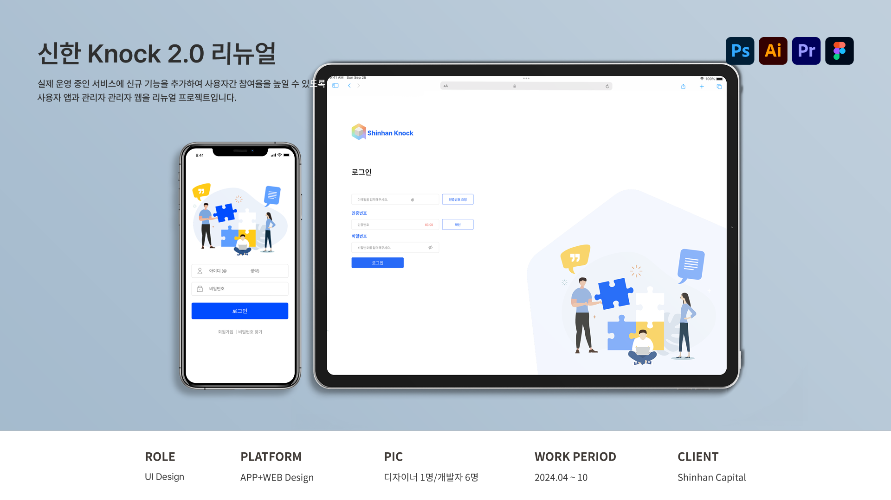

신한 Knock 2.0 리뉴얼 프로젝트

프로젝트 개요
프로젝트 목표
신규 기능을 추가하여 사용자 간 상호작용을 유도할 수 있도록 게시판 구조와 탐색 흐름을 개선하고, 자연스러운 참여로 이뤄지는 것을 목표로 한다.
디자인 목표
웹 어드민과 사용자 앱이 연동되는 서비스 특성을 고려해 사용자의 행동 흐름뿐만 아니라 운영자의 관리 흐름까지 함께 이해하고 이를 구조적으로 정리하여 자사 서비스의
활동성을 높인다.
프로젝트 타입
사용자 모바일 앱 · 관리자 웹 어드민 연동 기업 내부 커뮤니티 서비스
프로젝트 유형
B2B Admin page, User app Renewal Design
담당업무
담당 범위
UI 디자인 · UX 설계 과정 협업· 그래픽 디자인 · 클라이언트 소통 · 중단기 본사 파견 · 개발자 협업 · 디자인 QA 담당
사용자 앱 UI설계
적은 수의 카테고리와 단순 나열형으로 되어있던 기존 앱에서 메인화면에 카테고리 이동 접근성과 게시판 분류를 명확하게 보이도록 정보구조를 개선하고 새로운 기능을 친근하게 다가갈 수 있도록 자사 브랜드 아이덴티티를 활용해 시각적 계층을 설계하여 사용자의 상호작용을 유도하였습니다.
관리자 용 어드민 웹 UI설계
사용자 앱과 연동되는 서비스 특성을 고려하여 화면의 구조를 구조적으로 정리하고 운영의 흐름을 원할하게 제공하고자 일관된 디자인 시스템과 패턴을 적용하고, 각 역할에 맞게 시각적 인터페이스를 고려한 레이아웃 배치를 사용자에게 제공하였습니다.
홍보용 랜딩페이지 제작
새로 리뉴얼 된 앱의 다운로드 방법을 빠르게 전달하고 설치라는 행동으로 이끌어내기 위한 목적으로 단일 페이지를 기획, 디자인하여 기존 유저들에게 배포되었습니다.
그 외 프로젝트 내 콘텐츠 제작, 배포 후 피드백을 반영하여 UI개선 외 다수의 업무 진행
*본 프로젝트는 NDA(비밀유지 계약) 및 기업 보안 정책을 준수하기 위해 제작 화면은 공개가 불가능합니다.
해당 클라이언트, 제작을 담당회사에 저작권이 귀속되어있으며, 기업 제출 목적으로만 사용됩니다.
AI학습·무단 전재·복제 및 외부 배포를 금합니다.


© 2026 Leesujin. All rights reserved.